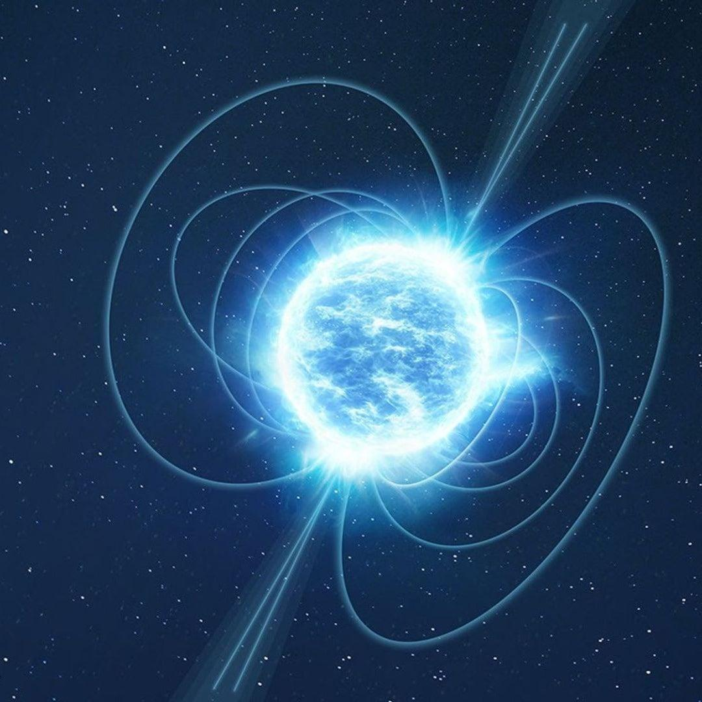

Что это за сигналы?

Представь: из далёкой галактики к Земле летит сигнал, который длится всего несколько миллисекунд. Он появляется внезапно и почти сразу исчезает. Но за этот короткий миг успевает выделиться огромное количество энергии.
Такие явления называют быстрыми радиовсплесками, или FRB (Fast Radio Bursts).
Это чрезвычайно короткие импульсы радиоизлучения, приходящие из космоса. Некоторые из них возникают за пределами Млечного Пути, а их источники могут находиться на расстоянии миллиардов световых лет от Земли.
Первые быстрые радиовсплески обнаружили в 2007 году при повторном анализе архивных наблюдений, сделанных ещё в 2001 году. С тех пор астрономы зарегистрировали тысячи подобных сигналов.
Кто посылает эти импульсы?

Долгое время учёные не могли понять, какие объекты способны создавать настолько мощные и короткие сигналы.
Одним из главных кандидатов стали магнетары — особый вид нейтронных звёзд.
Нейтронные звёзды появляются после гибели массивных звёзд. Они невероятно плотные: при размерах, сравнимых с городом, могут обладать массой, превышающей массу Солнца.
Магнетары отличаются особенно сильным магнитным полем. Оно настолько мощное, что способно вызывать необычные процессы вокруг звезды.
В 2020 году астрономы обнаружили быстрый радиовсплеск от магнетара SGR 1935+2154, находящегося в нашей Галактике. Это стало важным подтверждением того, что по крайней мере часть FRB действительно может возникать благодаря магнетарам.
Однако происхождение всех быстрых радиовсплесков пока не объяснено.
Как учёные ловят сигналы из космоса?

Обычные оптические телескопы наблюдают видимый свет, но быстрые радиовсплески обнаруживают с помощью радиотелескопов.
Один из самых известных инструментов для их изучения — канадский радиотелескоп CHIME. Он состоит из нескольких длинных цилиндрических отражателей и способен одновременно наблюдать огромную область неба.
CHIME регистрирует радиосигналы, которые приходят из разных направлений. Специальные компьютерные системы анализируют полученные данные и помогают обнаруживать короткие всплески, которые человек не смог бы заметить самостоятельно.
Некоторые источники посылают сигналы повторно. Это особенно интересно учёным: повторные всплески позволяют наблюдать один и тот же объект снова и снова, сравнивать сигналы и искать закономерности.
Что скрывают радиоволны?

Быстрые радиовсплески интересны не только своим происхождением. Они могут рассказать учёным о пространстве, через которое проходят.
Пока радиоволны путешествуют между галактиками, они взаимодействуют с веществом, находящимся в космосе. Из-за этого разные частоты сигнала достигают Земли с небольшой задержкой относительно друг друга.
Изучая эту задержку, астрономы могут оценивать количество вещества на пути сигнала, в том числе очень разреженного газа, который трудно обнаружить другими способами.
Получается, что даже короткий радиовсплеск может стать своеобразным посланием о строении Вселенной.
Тайна, которую ещё предстоит разгадать
Быстрые радиовсплески напоминают нам, как много ещё неизвестного скрывает космос. Мы научились обнаруживать сигналы, которые путешествуют к нам миллиарды лет, но до сих пор не можем полностью объяснить природу каждого из них.
Возможно, новые радиотелескопы помогут раскрыть происхождение этих загадочных импульсов. А может быть, впереди нас ждут открытия, которые изменят представление о самых необычных объектах Вселенной.
Иногда, чтобы узнать больше о космосе, достаточно научиться слушать его.
← Вернуться к разделу «Наука о космосе»